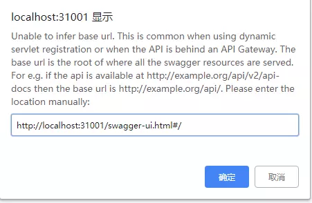

[TOC]
介绍
Swagger 是一个规范和完整的框架，用于生成、描述、调用和可视化 RESTful 风格的 Web 服务。总体目标是使客户端和文件系统作为服务器以同样的速度来更新。文件的方法，参数和模型紧密集成到服务器端的代码，允许API来始终保持同步。Swagger 让部署管理和使用功能强大的API从未如此简单。
使用
pom.xml
<!-- swagger2 -->
<dependency>
<groupId>io.springfox</groupId>
<artifactId>springfox-swagger2</artifactId>
<version>2.9.2</version>
</dependency>
<!-- swagger 原生ui -->
<!-- <dependency> -->
<!-- <groupId>io.springfox</groupId> -->
<!-- <artifactId>springfox-swagger-ui</artifactId> -->
<!-- <version>2.9.2</version> -->
<!-- </dependency> -->
<!-- bootstrap 写的ui-->
<dependency>
<groupId>com.github.xiaoymin</groupId>
<artifactId>swagger-bootstrap-ui</artifactId>
<version>1.9.3</version>
</dependency>
<!-- spring4All自己封装的,用的swagger自带的ui,这个一个包就足够了, 1.7版本用的是swagger2.9.0,但很多库没有这个包...所以跨过这个版本 -->
<!-- <dependency> -->
<!-- <groupId>com.spring4all</groupId> -->
<!-- <artifactId>swagger-spring-boot-starter</artifactId> -->
<!-- <version>1.9.0.RELEASE</version> -->
<!-- </dependency> -->
<!--高本版好像没有guava包,报错就加上-->
<dependency>
<groupId>com.google.guava</groupId>
<artifactId>guava</artifactId>
<version>27.0.1-jre</version>
</dependency>
重点是springfox-swagger2 包, UI可以随便,bootstrp的界面更友好
- bootstrp地址:
http://localhost:8998/doc.html - swagger-ui地址:
http://localhost:8998/swagger-ui.html
java
配置类
@Configuration // 表明这个类是个配置类
@EnableSwagger2 // 启用swagger
public class Swagger2 {
@Value("${sop.swagger.enable:false}") //默认值为false
public boolean isEnable;
@Bean
public Docket createRestApi() {
System.out.println("环境取值: isEnable:"+isEnable);
return new Docket(DocumentationType.SWAGGER_2)
.enable(isEnable)
.apiInfo(apiInfo())
.select()
// 扫描的包路径
.apis(RequestHandlerSelectors.basePackage("com.example.demo"))
// 监听所有方法
.paths(PathSelectors.any())
.build();
}
// 构建 api文档的详细信息函数,注意这里的注解引用的是哪个
private ApiInfo apiInfo() {
return new ApiInfoBuilder()
// 页面标题
.title("swagger的界面")
// 创建人
.contact(new Contact("xkj", "", ""))
// 版本号
.version("1.0")
// 描述
.description("这是我的swagger").build();
}
使用
@Api(value="测试控制类-val")
@RestController
@RequestMapping("/test")
@Slf4j
public class TestControll{
@GetMapping("hello")
@ApiOperation(value="嗨",notes="简单接口" )
public BaseResponse hello() {
BaseResponse response = new BaseResponse();
setResponse(response, ResponseEnum.JS002) ;
return response;
}
@PutMapping("addHelp")
@ApiParam(required=true,name="help",value="帮助类2")
public BaseResponse addHelp(@RequestBody HelpInfo help) {
log.info("入参:{}",help);
BaseResponse response= new BaseResponse();
setSuccessResponse(response);
log.info("返参:{}",LocalDateTime.now());
return response;
}
}
注解
@Api()用于类； 表示标识这个类是swagger的资源
- tags–表示说明
- value–也是说明，可以使用tags替代,1.5以后这个将废弃
@ApiOperation()用于方法； 表示一个http请求的操作
- value用于方法描述
- notes用于提示内容
- tags可以重新分组（视情况而用）
@ApiParam()用于方法，参数，字段说明； 表示对参数的添加元数据（说明或 必填等）
- name–参数名
- value–参数说明
- required–是否必填
@ApiModel()
用于类 表示对类进行说明，用于参数用实体类接收
- value–表示对象名
- description–描述
@ApiModelProperty()用于方法，字段,表示对model属性的说明或者数据操作更改
- value–字段说明
- name–重写属性名字
- dataType–重写属性类型
- required–是否必填
- example–举例说明
- hidden–隐藏
@ApiIgnore()用于类或者方法上，可以不被swagger显示在页面上
@ApiImplicitParam()用于方法 表示单独的请求参数
- name–参数ming
- value–参数说明
- dataType–数据类型
- paramType–参数类型,包括 query,header,path,body,form
- example–举例说明
- defaultValue：参数的默认值
@ApiImplicitParams()
用于方法，包含多个 @ApiImplicitParam
@ApiResponses：用于包含接口的一组响应。@ApiResponse：用在注解@ApiResponses中，表达一个错误的响应信息。
来源: https://blog.csdn.net/wyb880501/article/details/79576784
异常
访问页面弹框提示baseUrl不对
如图:

原因有二:
- 没有加载到swagger配置类
- swagger的资源被拦截器拦截了(暂未遇到)
解决:
- 检查swagger配置类是否能被项目扫描到;
- 检查配置类上的
@Configuration和@EnableSwagger2; - 在过滤器中排除swagger的资源
扩展
使用swagger是不是有以下问题:
- 每个项目都要集成swagger-mg-ui包，可不可以 文档和项目分开 ？
- document.html是个静态页面，怎么能做一些 权限控制 呢？登录后才能查看
- 其他编程语言 产生的swagger文档怎么可以使用这个文档工具查看呢？
- 可不可以关闭线上的文档，用 本地的文档页面调试线上的接口 呢？
- 项目非常的多，需要记许多的文档地址，能不能 统一管理 呢？
zyplayer-doc-swagger 可以解决这些烦恼. 这玩意把文档管理做成了一个系统,而不仅仅是个文档,